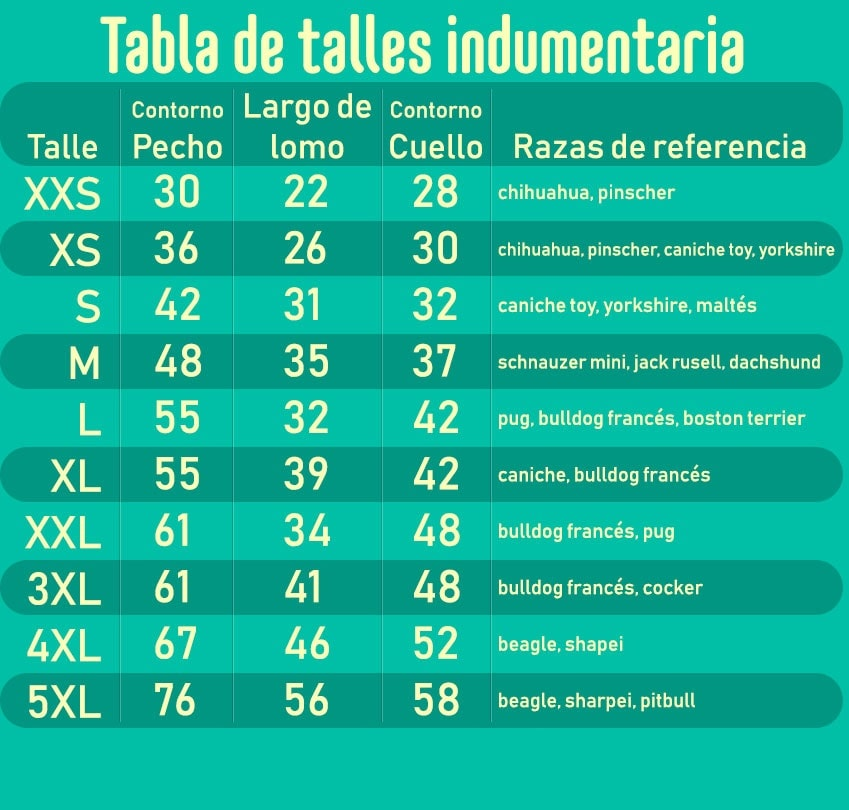

Guía de Medidas para Ropa de Mascotas
Variación de Medidas según la Raza
En PetParadise, sabemos que cada peludo es único y especial. Por eso, queremos asegurarnos de que encuentres la ropa perfecta para tu fiel amigo.
Nuestra guía de medidas te ayudará a tomar las dimensiones adecuadas para garantizar el ajuste perfecto y la comodidad de tu mascota.
Las razas de perros vienen en una amplia variedad de tamaños y formas, lo que significa que lo que le queda perfecto a un perro puede no ser adecuado para otro.
algunas razas tienen cuerpos más largos, cuellos más gruesos o patas más cortas, lo que puede influir en las medidas de la ropa.
Es fundamental tomar medidas precisas de tu mascota, independientemente de su raza, siguiendo nuestra guía de medidas detallada.
Esto garantizará que encuentres la talla adecuada para tu perro y que la ropa que elijas se ajuste cómodamente y le permita moverse con libertad.
Recuerda que estamos aquí para ayudarte. Si tienes dudas sobre cómo tomar las medidas de tu perro o si estás buscando recomendaciones específicas para una raza en particular,
no dudes en contactar a nuestro equipo de atención al cliente.
Estamos comprometidos a garantizar que tu mascota luzca fabulosa y se sienta cómoda con la ropa que elijas.
En PetParadise, celebramos la diversidad de razas y estamos listos para ofrecer ropa que se adapte a todas ellas. ¡Esperamos ayudarte a encontrar la prenda perfecta para tu peludo amigo, independientemente de su raza!
Como tomarle las medidas a tu mascota
El contorno de pecho es la medida más importante y es la que define si le va a ir grande o chica la prenda.
Tener en cuenta primero esta medida antes que la del lomo. Lo que se mide es la circunferencia del tórax.

El largo de lomo se mide desde la base del cuello, donde iría el collar (el cuello no se mide), hasta el inicio de la cola.
La mascota tiene que estar parada en sus cuatro patas para evitar medirlo mal.
Evitar que esté en la pose de la foto.

El contorno de cuello es la medida menos importante, es solo para tener una referencia.


ENVÍOS GRATIS
En compras superiores a $5000.
DEVOLUCIONES / CAMBIOS
En caso de defectos de fabricación o talle mal elegido se realiza el cambio o devolucipon del dinero.

AYUDA EN LÍNEA
Cualquier duda se responderá a la brevedad.